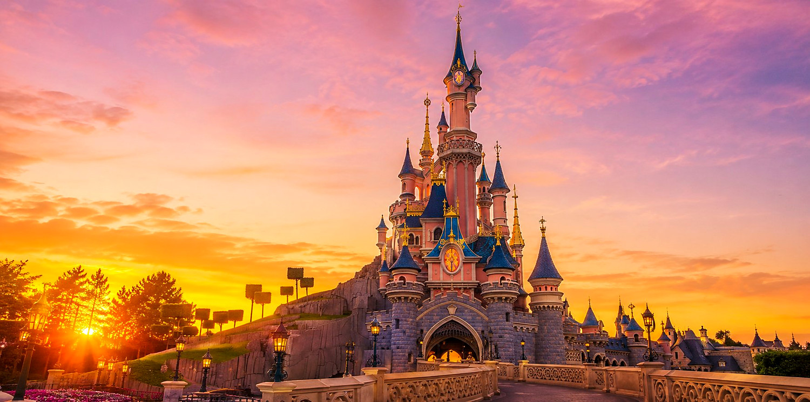
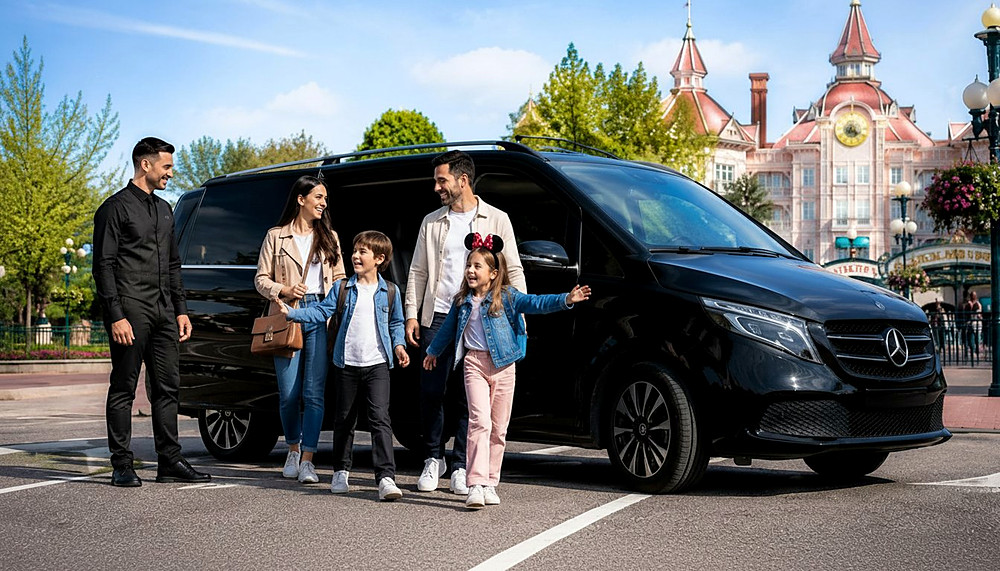
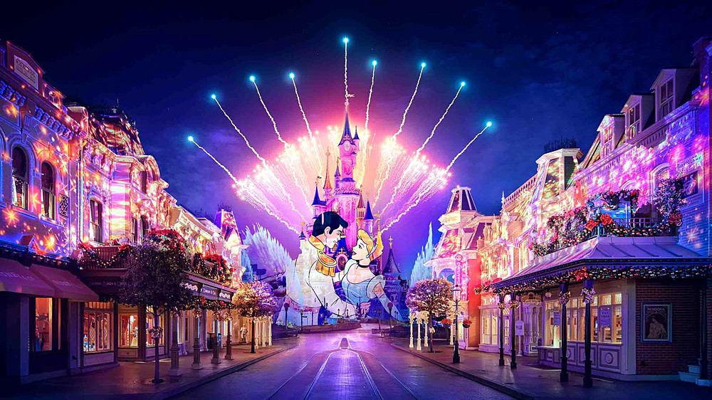
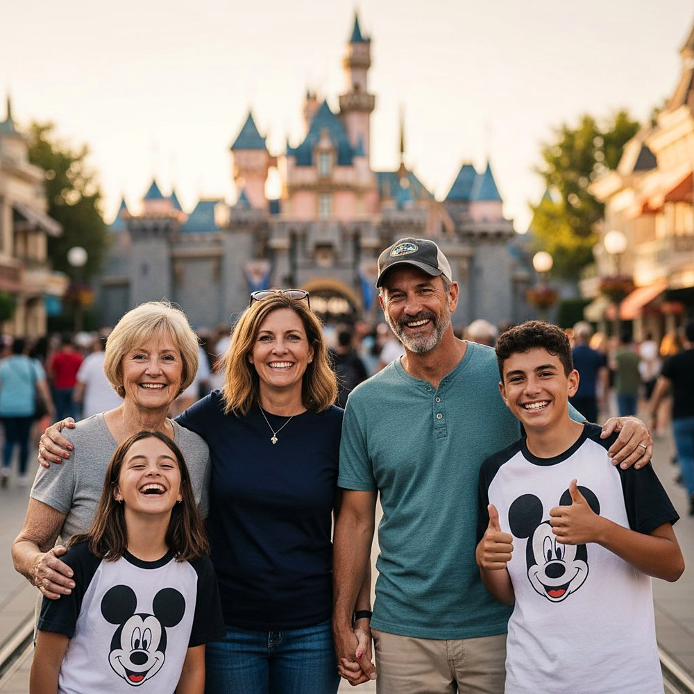
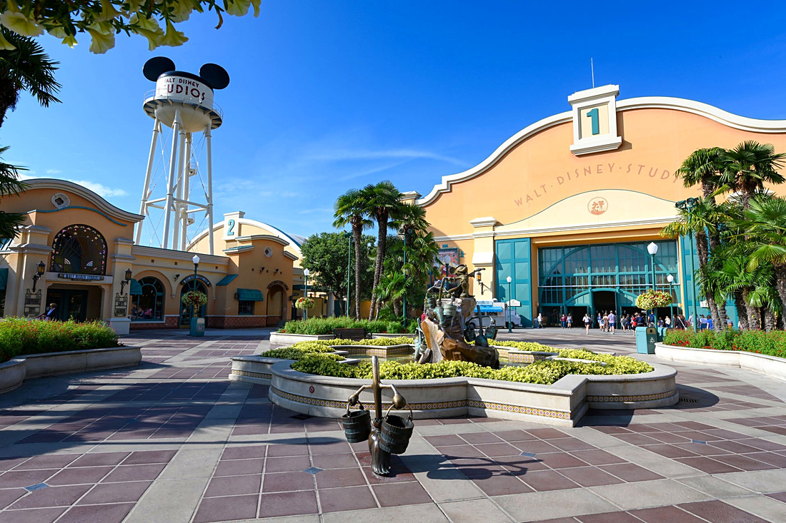

Pack Loisir & Visite
Pack Loisir & Visite
La magie sans le stress : votre chauffeur privé vous emmène de l'hôtel au parc et vous ramène, billets inclus, aux horaires que vous choisissez.
Une formule clé en main, pensée pour les familles et les groupes — vous profitez, on s'occupe de tout.
Berline Premium, Éco Green Hybride ou Van Mercedes Classe V selon le nombre de passagers et de bagages.
Prise en charge directement devant votre hôtel parisien (ou adresse de votre choix) pour rejoindre le parc.
Vos billets d'entrée pour le Parc Disneyland, ou l'option Billet 2 Parcs (Disneyland + Walt Disney Studios).
À la fin de votre journée, votre chauffeur vous récupère à Disneyland et vous raccompagne à votre hôtel.
Vous choisissez l'heure de départ et de retour : on s'adapte à votre rythme et à celui de vos enfants.
Une bouteille d'eau fraîche offerte à chaque passager à bord du véhicule.





Votre chauffeur vous accueille à l'hôtel à l'heure convenue.
Trajet confortable et direct jusqu'à Disneyland Paris, eau offerte à bord.
Vos billets 1 ou 2 parcs vous attendent — place à la magie.
Votre chauffeur vous raccompagne à l'hôtel à l'heure de votre choix.
Choisissez le Pack Disneyland 1 ou 2 Parcs dans « Services Pack », ou demandez du sur-mesure avec le Pack Spécial Devis.
Continuer ma réservationVotre réservation en cours sur le site n'est pas perdue.